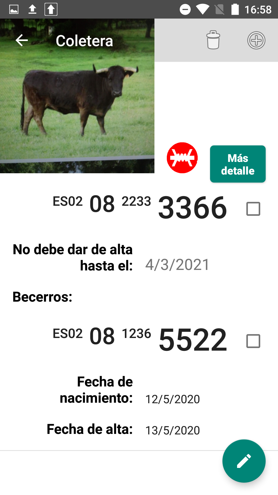

- Si han pasado 10 meses desde que registró su último becerro, El Mayoral le dejará añadir un nuevo becerro (puede revisar la imagen de la vaca Bonita)
- Si no han pasado 10 meses desde que registró su último becerro, El Mayoral le indicará la fecha en la que podrá añadir su nuevo becerro (puede revisar la imagen de la vaca Coletera)
- Si quiere añadir más becerros de otro año, puede pulsar el botón de arriba con forma cruz con un círculo al rededor.

Para añadir el número del crotal con escáner debe seguir estos pasos:
1) Pulse el botón verde que esta debajo de título crotal.
2) Aparecerá una pantalla en el que tendrá que situar el crotal entre los márgenes de la ventana.
3) Seleccione una de las opciones que van saliendo en lista.
4) Al Seleccionarla el número, la ventana desaparecerá y se mostraran los campos rellenos con el número del crotal.
Para añadir la primera parte del crotal debe seguir estos pasos:
1) Pulse botón negro de arriba a la derecha con una cruz blanca.
2) Introduzca la dos letras y los cuatro primeros números.
3) Pulse el botón de guardar.
4) La ventana desaparece y los dos primeros campos de los crotales aparecerán rellenos.
Puede buscar de tres formas.
- Por las 4 últimas cifras del crotal.
- Por el crotal completo, usando el escáner o añadiendo los números con el teclado.
- Por el nombre del animal.
Nota:(Tiene que poner el nombre tal y como lo guardó)
Para cambiar de cercado a varios animales seleccionados debe seguir estos pasos:
1) Seleccione los animales que desea cambiar de cercado.
2) Pulse el botón de los tres puntos (arriba a la derecha).
3) Seleccione cambiar de cercado.
4) La lista se refrescará con el nuevo cercado en los animales seleccionados.
Para filtrar por crotal perdido:
1) Anote en editar animal si se ha perdido el crotal en la oreja izquierda, derecha o en ambas orejas.
2) Guárdelo, vaya a la lista principal y pulse el botón del menú principal.
3) Pulse el botón de la oreja rasgada.
4) Filtre por:
- ningún crotal perdido
- crotal derecho perdido
- crotal izquierdo perdido
- ambos crotales perdidos
- ambos, derecho o izquierdo
5) La lista se refrescará con los animales con crotales perdidos.